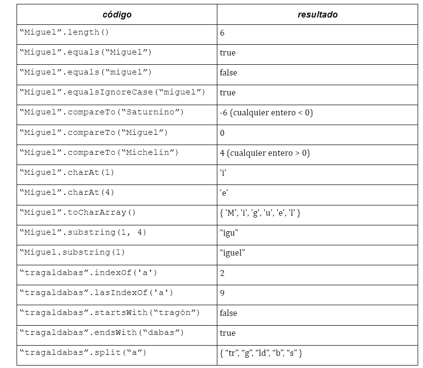
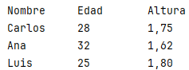

💾 String en Java¶
Un String es un tipo de dato no primitvo que, en Java representa una cadena de caracteres no modificable. Todos los literales de la forma "cualquier texto", es decir, literales entre comillas dobles, que aparecen en un programa java se implementan como objetos de la clase String.
A diferencia de otras clases, String se puede crear sin la palabra new.
String text = "hola";
Creación de String¶
Se puede crear un String de varias formas.
String texto = "Severo Ochoa";
//Utilizando new
String texto2 = new String("Severo Ochoa");
//Utilizando el operador concatenación +
String s2 = text + " 2023"; //s2 contiene "Severo Ochoa 2023"
El operador concatenación¶
La clase proporciona el operador + (concatenación) para unir dos o más String. El resultado de aplicar este operador es un nuevo String concatenación de los otros. Por ejemplo, si tenemos dos String b y c:
String b = "Ordenador";
String c = " Portátil";

La operación
b = b + c;
Crea un nuevo String que se incluye en el String Pool:

Índices¶
Cada uno de los caracteres que forman un String son del tipo primitivo char. Los caracteres de un string están numerados internamente con índices empezando desde el cero:

El primer carácter tiene índice 0 y el último tiene la longitud del string menos 1.
Métodos de la clase String¶
La clase String proporciona métodos para el tratamiento de las cadenas de caracteres: acceso a caracteres individuales, buscar y extraer una subcadena, copiar cadenas, convertir cadenas a mayúsculas o minúsculas, etc. Alguno de los métodos más importantes son:
| Método | Descripción | Ejemplo de Uso |
|---|---|---|
length() |
Devuelve la longitud de la cadena (el número de caracteres). | int len = "Hola".length(); // len es 4 |
charAt(int index) |
Devuelve el carácter en la posición (índice) especificada. El índice comienza en 0. | char c = "Java".charAt(1); // c es 'a' |
equals(Object anObject) |
Compara la cadena con el objeto especificado. Devuelve true si las cadenas son idénticas (sensible a mayúsculas/minúsculas). | boolean b = "Hola".equals("hola"); // b es false |
equalsIgnoreCase(String anotherString) |
Compara la cadena con otra cadena, ignorando la distinción entre mayúsculas y minúsculas. | boolean b = "Hola".equalsIgnoreCase("hola"); // b es true |
indexOf(String str) |
Devuelve el índice de la primera aparición de la subcadena especificada. Devuelve -1 si no se encuentra. |
int idx = "banana".indexOf("an"); // idx es 1 |
lastIndexOf(String str) |
Devuelve el índice de la última aparición de la subcadena especificada. | int idx = "banana".lastIndexOf("an"); // idx es 3 |
substring(int beginIndex) |
Devuelve una nueva subcadena que comienza en el índice especificado y se extiende hasta el final. | String sub = "Ejemplo".substring(3); // sub es "mplo" |
substring(int beginIndex, int endIndex) |
Devuelve una subcadena que comienza en beginIndex (inclusivo) y termina en endIndex (exclusivo). |
String sub = "Ejemplo".substring(2, 5); // sub es "emp" |
toUpperCase() |
Convierte todos los caracteres de la cadena a mayúsculas. | String mayus = "abc".toUpperCase(); // mayus es "ABC" |
toLowerCase() |
Convierte todos los caracteres de la cadena a minúsculas. | String minus = "ABC".toLowerCase(); // minus es "abc" |
trim() |
Devuelve una copia de la cadena, eliminando los espacios en blanco iniciales y finales. | String t = " hola ".trim(); // t es "hola" |
replace(char oldChar, char newChar) |
Devuelve una nueva cadena que resulta de reemplazar todas las ocurrencias de oldChar con newChar. |
String r = "papa".replace('p', 'm'); // r es "mama" |
startsWith(String prefix) |
Comprueba si la cadena comienza con el prefijo especificado. | boolean b = "casa".startsWith("ca"); // b es true |
endsWith(String suffix) |
Comprueba si la cadena termina con el sufijo especificado. | boolean b = "casa".endsWith("sa"); // b es true |
contains(CharSequence s) |
Comprueba si la cadena contiene la secuencia de caracteres especificada. | boolean b = "manzana".contains("anz"); // b es true |
split(String regex) |
Divide la cadena alrededor de las coincidencias de la expresión regular dada y devuelve un array de cadenas. | String[] arr = "a,b,c".split(","); // arr = ["a", "b", "c"] |
concat(String str) |
Concatena la cadena especificada al final de esta cadena. (Menos común que usar el operador +). |
String c = "Hola".concat(" Mundo"); // c es "Hola Mundo" |
Para acceder a alguno de los métodos siguientes utilizamos la notación "."
String texto = "Clase";
int longitud = texto.length(); //devuelve 5


Tip
Para más información consulta la documentación oficial de la clase String
Comparar Strings¶
Los operadores relacionales como == o < > NO se utilizan para comparar Strings, aunque el código compile no es correcto, ya que == compara objetos, y devolvería falso aunque dos strings tuvieran el mismo texto puesto que son objetos diferentes.
Para comparar strings utilizamos el método equals.
String name = "Patri";
if (name.equals("Patri")) {
System.out.println("Coincide.");
}
La siguiente tabla muestra los métodos que se utilizan para comparar Strings.
| Método | Descripción | Ejemplo de Uso |
|---|---|---|
equals(str) |
Comprueba si dos cadenas contienen exactamente los mismos caracteres, respetando mayúsculas y minúsculas (sensible a mayúsculas/minúsculas). | boolean b = "Hola".equals("hola"); // b es false |
equalsIgnoreCase(str) |
Comprueba si dos cadenas contienen los mismos caracteres, ignorando la distinción entre mayúsculas y minúsculas. | boolean b = "Hola".equalsIgnoreCase("hola"); // b es true |
startsWith(str) |
Comprueba si una cadena comienza con los caracteres de la cadena especificada. | boolean b = "casa".startsWith("ca"); // b es true |
endsWith(str) |
Comprueba si una cadena termina con los caracteres de la cadena especificada. | boolean b = "casa".endsWith("sa"); // b es true |
contains(str) |
Comprueba si la cadena especificada se encuentra dentro de esta cadena. | boolean b = "manzana".contains("anz"); // b es true |
char dentro de String¶
Como se ha comentado, un String está compuesto de caracteres tipo char.
Para acceder a los caracteres dentro de un String usamos el método charAt.
Se puede usar la concatenación + para concatenar char con String.
String food = "cookie";
char firstLetter = food.charAt(0); // 'c'
System.out.println(firstLetter + " is for " + food);
También podemos recorrer el String con un bucle for e imprimir cada uno de los caracteres que lo forman.
String major = "CSE";
for (int i = 0; i < major.length(); i++) {
char c = major.charAt(i);
System.out.println(c);
}
OUTPUT
C
S
E
String s="Hola";
for (char c:s.toCharArray()) {
System.out.println(c);
}
char¶
A todos los valores char se les asigna un número internamente por el ordenador, son los llamados valores UNICODE. Por ejemplo:
el carácter 'A' es 65 en código UNICODE
el carácter 'a' es 97 en código UNICODE
Mezclar tipos de datos char e int automáticamente causa una conversión en entero. Por ejemplo:
'a' + 10 → devuelve 107.
Para convertir un entero en su equivalente a carácter (char) haríamos:
(char) ('a' + 2) → devuelve 'c'.
Diferencias entre char y String¶
- String es un objeto, por tanto, contiene métodos.
- char es un tipo de dato primitivo, no puedes llamar a métodos con él.
- String utiliza comillas dobles.
- char utiliza comillas simples.
- No se puede comparar un String usando operadores relacionales.
- Si se puede comparar un char usando operadores relacionales: 'a' < 'b', 'X' == 'X', ...
Clasificación de caracteres¶
Un carácter puede clasificarse dentro de alguno de estos grupos:
- Dígitos: formado por '0', '1'...'9'
- Letras: formado por todos los elementos del alfabeto: 'a','b'...'A','B'...
- Caracteres blancos: como espacio, tabulador...todos aquellos que no tienen representación visual
- Otros caracteres: signos de puntuación, matemáticos, etc.
Tenemos una serie de métodos que nos permite saber el tipo de carácter
| Método | Descripción | Ejemplo de Uso |
|---|---|---|
boolean isUpperCase(char) |
Determina si el carácter especificado es una mayúscula. | boolean b = Character.isUpperCase('A'); // b es true |
boolean isLowerCase(char) |
Determina si el carácter especificado es una minúscula. | boolean b = Character.isLowerCase('b'); // b es true |
char toUpperCase(char) |
Devuelve el carácter en su equivalente en mayúsculas. | char c = Character.toUpperCase('a'); // c es 'A' |
char toLowerCase(char) |
Devuelve el carácter en su equivalente en minúsculas. | char c = Character.toLowerCase('B'); // c es 'b' |
boolean isLetter(char) |
Determina si el carácter especificado es una letra (alfabético). | boolean b = Character.isLetter('p'); // b es true |
boolean isDigit(char) |
Determina si el carácter especificado es un dígito (0-9). | boolean b = Character.isDigit('5'); // b es true |
boolean isLetterOrDigit(char) |
Determina si el carácter es una letra o un dígito. | boolean b = Character.isLetterOrDigit('@'); // b es false |
boolean isWhitespace(char) |
Determina si el carácter es un carácter de espacio en blanco según las especificaciones de Java. | boolean b = Character.isWhitespace(' '); // b es true |
boolean isSpaceChar(char) |
Determina si el carácter es un carácter de espacio en blanco de acuerdo con el estándar Unicode. | boolean b = Character.isSpaceChar('\t'); // b es false |
boolean b;
b=Character.isDigit('8');//true
b=Character.isDigit('a');//false
b=Character.isLetter('8');//false
b=Character.isLetter('a');//true
b=Character.isLetterOrDigit('8');//true
b=Character.isLetterOrDigit('a');//true
b=Character.isLetterOrDigit('%');//false
b=Character.isUpperCase('t');//false
b=Character.isUpperCase('T');//true
b=Character.isLowerCase('t');//true
b=Character.isLowerCase('T');//false
b=Character.isWhitespace('\n');//true
b=Character.isWhitespace('\r');//true
b=Character.isWhitespace(' ');//true
b=Character.isWhitespace('a');//false
Tip
Para más información consulta la documentación oficial de la clase Character
Modificación de cadenas con frecuencia: StringBuilder¶
Como hemos visto anteriormente
Warning
Cada vez que se reasigna un String a una variable, se destruye el objeto y se crea uno nuevo lo que puede implicar una perdida de eficiencia y recursos cuando estamos construyendo un String en un algoritmo que implica muchas reasignaciones.
Tenemos la clase StringBuilder que permite manipular cadenas de forma eficiente, ya que se puede modificar su contenido sin crear nuevos objetos en memoria.
Sus métodos principales son
Métodos principales de StringBuilder en Java¶
| Método | Descripción | Ejemplo |
|---|---|---|
append(String s) |
Añade texto al final del contenido actual del StringBuilder. |
StringBuilder sb = new StringBuilder("Hola");sb.append(" Mundo");// Salida: Hola Mundo |
insert(int offset, String s) |
Inserta una cadena en una posición específica dentro del StringBuilder. |
StringBuilder sb = new StringBuilder("Hola");sb.insert(4, " Mundo");// Salida: Hola Mundo |
delete(int start, int end) |
Elimina los caracteres comprendidos entre las posiciones indicadas (start inclusivo, end exclusivo). |
StringBuilder sb = new StringBuilder("Hola Mundo");sb.delete(5, 10);// Salida: Hola |
replace(int start, int end, String s) |
Reemplaza los caracteres entre los índices especificados con la cadena proporcionada. | StringBuilder sb = new StringBuilder("Hola Mundo");sb.replace(5, 10, "Java");// Salida: Hola Java |
reverse() |
Invierte el contenido del StringBuilder. |
StringBuilder sb = new StringBuilder("Hola");sb.reverse();// Salida: aloH |
length() |
Devuelve el número de caracteres que contiene el StringBuilder. |
StringBuilder sb = new StringBuilder("Hola");System.out.println(sb.length());// Salida: 4 |
capacity() |
Muestra la capacidad actual del buffer interno. Este valor aumenta automáticamente cuando se excede. | StringBuilder sb = new StringBuilder();System.out.println(sb.capacity());// Salida: 16 (por defecto) |
setCharAt(int index, char ch) |
Modifica un carácter específico en la posición indicada. | StringBuilder sb = new StringBuilder("Hola");sb.setCharAt(1, 'e');// Salida: Hela |
substring(int start, int end) |
Devuelve una subcadena que empieza en start y termina en end (exclusivo), similar a String. |
StringBuilder sb = new StringBuilder("Hola Mundo");System.out.println(sb.substring(0, 4));// Salida: Hola |
deleteCharAt(int index) |
Elimina el carácter en la posición especificada. | StringBuilder sb = new StringBuilder("Hola Mundo");sb.deleteCharAt(4);// Salida: HolaMundo |
El siguiente ejemplo construimos un String concatenando 100 números mediante StringBuilder
public static void main(String[] args) {
int n = 100;
StringBuilder sb = new StringBuilder();
sb.append("Números de 1 al ")
sb.append(n);
sb.append(": ");
for (int i = 0; i < n; i++) {
sb.append(i).append(" ");
}
System.out.println(sb);
}
Formateo de cadenas: String.format¶
La clase String en Java incluye el método estático String.format, que se utiliza para crear cadenas formateadas de manera eficiente. Este método permite insertar valores en una cadena de texto según un formato especificado
Sintaxis básica
String formattedString = String.format(String format, Object... args);
- format: Especifica el patrón de formato (con especificadores como %s, %d, %f).
- args: Lista de argumentos que se insertan en el patrón.
public static void main(String[] args) {
double dinero=10.345;
String nombre="Juanito";
String salida= String.format("%s tienes %.2f€ en tu cuenta",nombre,dinero);
System.out.println(salida);
//Juanito tienes 10,35€ en tu cuenta
}
Especificadores comunes en String.format¶
| Especificador | Descripción | Ejemplo | Salida |
|---|---|---|---|
%s |
Representa una cadena de texto. | String.format("Hola %s", "Mundo") |
Hola Mundo |
%d |
Representa un número entero en formato decimal. | String.format("Número: %d", 42) |
Número: 42 |
%f |
Representa un número en formato decimal (coma flotante). | String.format("Valor: %.2f", 3.1416) |
Valor: 3.14 |
%x |
Representa un número en formato hexadecimal (en minúsculas). | String.format("Hex: %x", 255) |
Hex: ff |
%X |
Representa un número en formato hexadecimal (en mayúsculas). | String.format("Hex: %X", 255) |
Hex: FF |
%o |
Representa un número en formato octal. | String.format("Octal: %o", 8) |
Octal: 10 |
%% |
Representa el carácter %. |
String.format("Progreso: 75%%") |
Progreso: 75% |
%e |
Representa un número en notación científica (minúsculas). | String.format("Científico: %e", 12345.6789) |
Científico: 1.234568e+04 |
%E |
Representa un número en notación científica (mayúsculas). | String.format("Científico: %E", 12345.6789) |
Científico: 1.234568E+04 |
%c |
Representa un carácter. | String.format("Letra: %c", 'A') |
Letra: A |
%b |
Representa un valor booleano (true o false). |
String.format("Es válido: %b", true) |
Es válido: true |
%,d |
Formatea números enteros con separadores de miles (según la configuración regional). | String.format("Número: %,d", 1000000) |
Número: 1,000,000 |
Ejemplos¶
Ejemplo 1: Formatear texto y números
double precio = 45.6789;
String resultado = String.format("El precio es %.2f euros.", precio);
System.out.println(resultado);
// Salida: El precio es 45.68 euros.
double precio = 45.6789;
String resultado = String.format("El precio es %.2f euros.", precio);
System.out.println(resultado);
// Salida: El precio es 45.68 euros.
int numero = 255;
String resultado = String.format("Decimal: %d, Hexadecimal: %x, Octal: %o", numero, numero, numero);
System.out.println(resultado);
// Salida: Decimal: 255, Hexadecimal: ff, Octal: 377
public class Persona {
private String nombre;
private int edad;
private double altura;
// Constructores
//....
// Getters y setter
//....
public static void main(String[] args) {
// Crear objetos Persona
Persona p1 = new Persona("Carlos", 28, 1.75);
Persona p2 = new Persona("Ana", 32, 1.62);
Persona p3 = new Persona("Luis", 25, 1.80);
// Imprimir tabla tabulada
String formatoEncabezado="%-10s %-10s %-10s";
String formatoFila="%-10s %-10d %-10.2f";
System.out.println(String.format(formatoEncabezado, "Nombre", "Edad", "Altura"));
System.out.println(String.format(formatoFila, p1.getNombre(), p1.getEdad(), p1.getAltura()));
System.out.println(String.format(formatoFila, p2.getNombre(), p2.getEdad(), p2.getAltura()));
System.out.println(String.format(formatoFila, p3.getNombre(), p3.getEdad(), p3.getAltura()));
}
}
